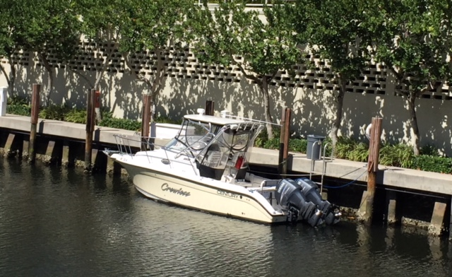
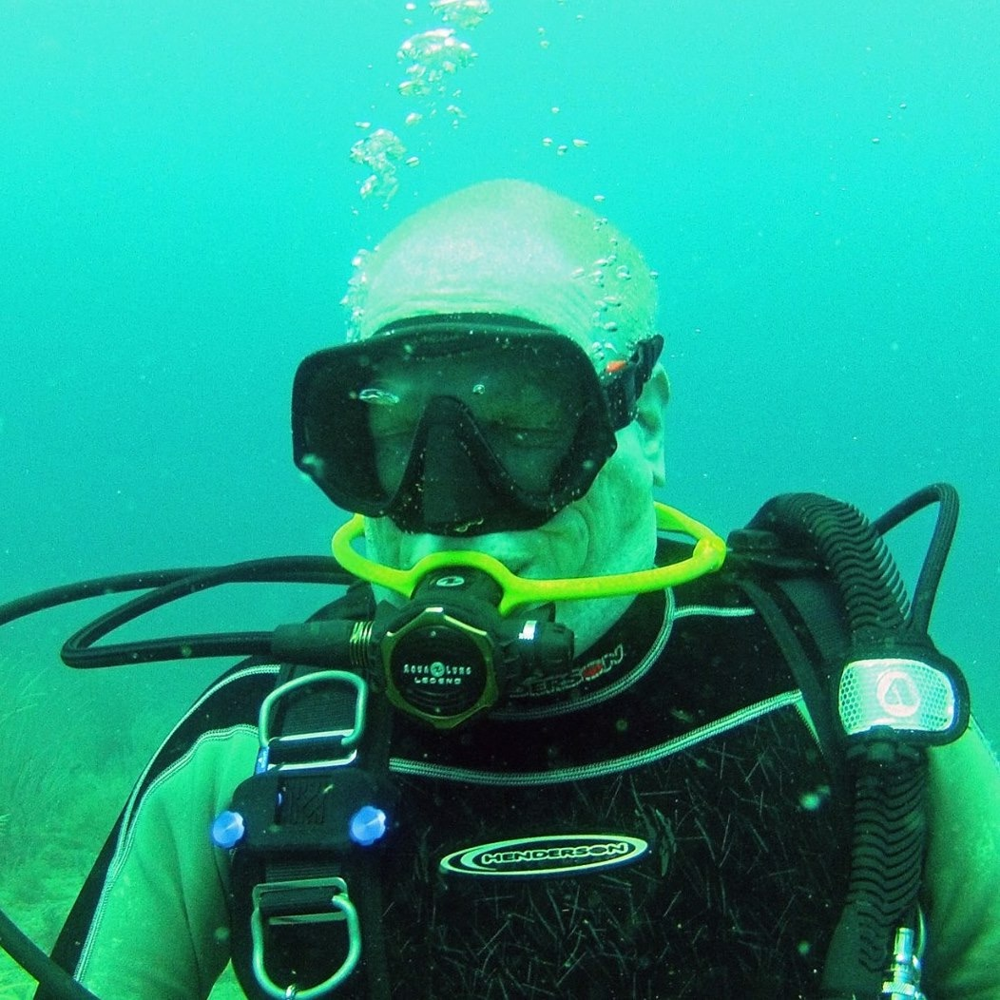

The Adventure Begins!
Ahoy! I'm Captain Eddie. I have over 40 years of experience exploring the waters around Florida. I'm a licenced boat captain, a certified dive instructor, an experienced fisherman, and an all around good time. I've been taking people on fun adventures since 2004 and hope you join me next!
The Crewless
The Crewless is my 32' vessel equipped for any sea adventure you can dream of. I have diving and fishing gear, rafts and water skis, a kitchen and grill, and an on board bathroom. The Crewless' twin 300hp Yamaha engine's ensure that we get to the fun you seek quickly. Safety and fun are my top priorities.
My vessel is utilized by the US Coast Guard Auxiliary and has all state of the art safety equipment. Additionally, I have it serviced monthly to make sure everything is in top condition.
The Adventures that Await.
No matter what the ocean adventure is that you seek, I am the captain that can deliver. My adventures range from sport fishing in the Atlantic, to scuba diving on Florida's beautiful reefs or wrecks, to enjoy a relaxing day in the sun. Below are just a few of the possible ocean adventures we can go on.
- Sport Fishing.
- Scuba Diving.
- Water Skiing and Wake Boarding.
- Day Trips to the Keys and the Bahamas.
- Sunset Cruises.
- Booze Cruises Stopping at Several Waterfront Bars and Restaurants.
- Site Seeing Tours.
- Bachelor and Bachelorette Parties.
The possibilities are endless and the adventure of your dreams awaits. So what are you waiting for? Get in contact with me and let the adventure begin!
(c) 2004-2018 All rights reserved. Captain Eddie's Ocean Adventures LLC.